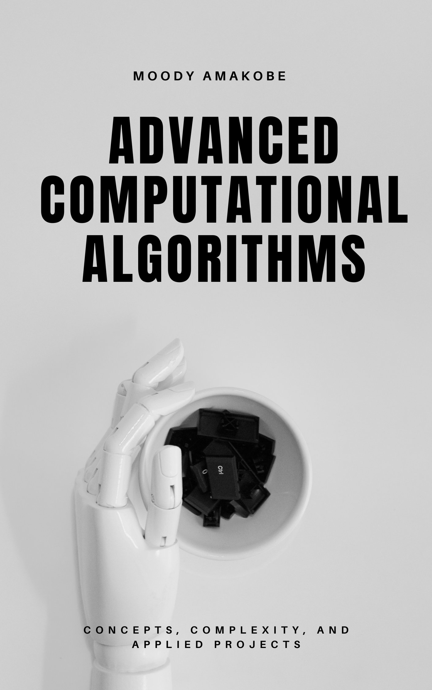

Advanced Computational Algorithms
Concepts, Complexity, and Applied Projects
Welcome

Welcome to Advanced Computational Algorithms!
This open textbook is designed for advanced undergraduate and graduate students in computer science, data science, and related disciplines.
The book explores theory and practice: algorithmic complexity, optimization strategies, and hands-on projects that build up from chapter to chapter until a final applied artifact is produced.
Abstract
Algorithms are at the heart of computing. This book guides you through advanced topics in computational problem solving, balancing rigorous theory with practical implementation.
We cover: - Complexity analysis and asymptotics
- Advanced data structures
- Graph algorithms
- Dynamic programming
- Approximation and randomized algorithms
- Parallel and distributed algorithms
By the end, you’ll have both a deep theoretical foundation and practical coding experience that prepares you for research, industry, and innovation.
Learning Objectives
By working through this book, you will be able to:
- Analyze algorithms for correctness, efficiency, and scalability.
- Design solutions using divide-and-conquer, greedy, dynamic programming, and graph-based techniques.
- Evaluate trade-offs between exact, approximate, and heuristic methods.
- Implement algorithms in multiple programming languages with clean, maintainable code.
- Apply advanced algorithms to real-world domains (finance, bioinformatics, AI, cryptography).
- Critically assess algorithmic complexity and performance in practical settings.
License
This book is published by Global Data Science Institute (GDSI) as an Open Educational Resource (OER).
It is licensed under the Creative Commons Attribution 4.0 International (CC BY 4.0) license.
You are free to share (copy and redistribute) and adapt (remix, transform, build upon) this material for any purpose, even commercially, as long as you provide proper attribution.

How to Use This Book
- The online HTML version is the most interactive.
- You can also download PDF and EPUB versions for offline use.
- Source code examples are available in the
/codefolder and linked throughout the text.